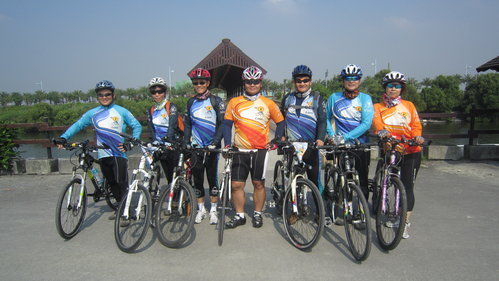
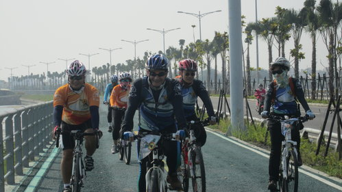
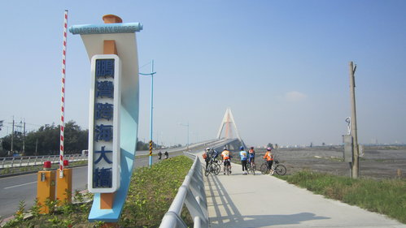
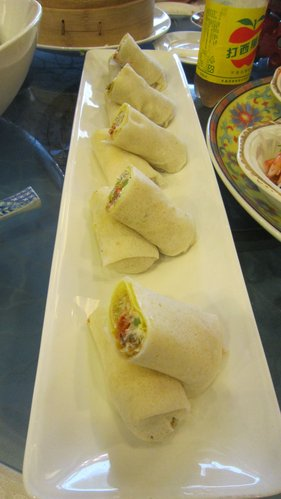

很幸運的，就在河東獅本年度最後一次出遊，是個萬里晴空又涼風徐徐的好天氣，
我們目標是大鵬灣，這單程來回八十公里的路程，雖說是頗具挑戰性，在獅友們實力面前，
不過是舒展筋骨爾爾。
【景點介紹，大鵬灣古稱「鱉興港」、「茄藤港」、「關帝港」及「南平港」，日治時期則稱為「大潭」，為二次大戰日軍侵略東南亞的軍事，西元1949年國民政府遷台接管後，才改為「大鵬灣」。
大鵬灣是林邊溪及東港溪從上游挾帶泥沙入海，再經海流、季風的漂送形成沙嘴沈積現象，是臺灣
最大單口囊狀潟湖。為保】
～～～～～～～～～～～
踩著踏板，
我們目標是大鵬灣，這單程來回八十公里的路程，雖說是頗具挑戰性，在獅友們實力面前，
不過是舒展筋骨爾爾。
【景點介紹，大鵬灣古稱「鱉興港」、「茄藤港」、「關帝港」及「南平港」，日治時期則稱為「大潭」，為二次大戰日軍侵略東南亞的軍事，西元1949年國民政府遷台接管後，才改為「大鵬灣」。
大鵬灣是林邊溪及東港溪從上游挾帶泥沙入海，再經海流、季風的漂送形成沙嘴沈積現象，是臺灣
最大單口囊狀潟湖。為保】
～～～～～～～～～～～
踩著踏板，
路上一邊哈啦，一邊感受著這美好的天氣～
出發後不久，不知不覺的，我們就到達了目的地大鵬灣。
這時許雲龍大哥賢伉儷已經在涼亭下泡著好茶，貼心的備好點心 ，
迎接我們的到來（非常感恩！），這兩次的出遊都勞煩您了！

就在充滿詩情畫意的美麗小潟湖畔留下了倩影

接著，就開始環大鵬灣一周囉～十公里的路程，順著風的吹拂，令人忘記時值正午。

岸旁有不少候鳥來台灣過冬，各位嬌客在這裡吃飽一點再繼續旅程吧！
來到了跨海大橋，這座大橋相當特別，為了可以讓遊艇進出，所以橋面可以開啟，
可惜這次沒有碰見開啟的時刻。
跨海大橋相當壯觀，而且設計的頗具美感，遠遠看不出它是如此巨大，
爬橋時才能感受到這座橋好長啊～～～（爬得好累～）
橋前合照，巧遇香港來台旅遊的貴客～
上次在旭海也有遇到單車環島的香港旅客，歡迎你們，你們一定能帶著美好回憶回家的。

中午了～巴豆么囉～趕快加緊踩踏，美食正在等著我們啊啊啊啊～～
來到了海產大街～這次我要吃十碗啊！！

這家「佳珍海鮮餐廳」，菜色一級棒就算了，又便宜，師傅手藝好，海產鮮甜，
令人不知不覺就把碗盤給清空囉～〈大！滿！足！〉

品嚐完美食後，來壺香茗，品著茶香，大夥愉快的聊著天。
於是乎，我們就在歡笑中，帶著愉快滿足的心情，踩向返家的旅程。
【本次旅程自鳳山宿舍來回約八十多公里，從茄萣來回約160左右】
http://g.co/maps/ueq2n （路線圖）